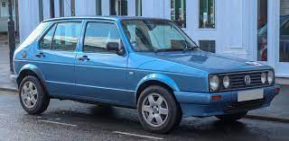
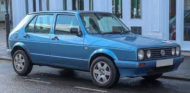
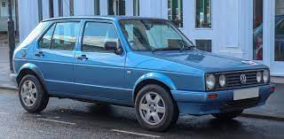
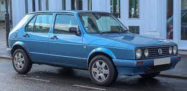

Volkswagen Citi Golf is a right-hand drive 5-door hatchback manufactured and marketed by Volkswagen in South Africa from 1984 to 2009 as a facelifted version of the first generation Volkswagen Golf Mk1, which ceased production in Germany in 1983
The car consumes a lot of fuel, an average of 9.6l per 100 Ks to be exact. It's got 17" wheels
Powels noted that the demise of the Citi Golf was not brought about by any stuttering in demand. “There is still demand, but it is no longer economically viable to produce any platform that has a production level of 20 000 to 25 000 units a year
Price: R20000 km:96000 model:2008 volkswagen citi 1. 4i sport vw citi golf model: 2008 kilometers: 96000 transmission